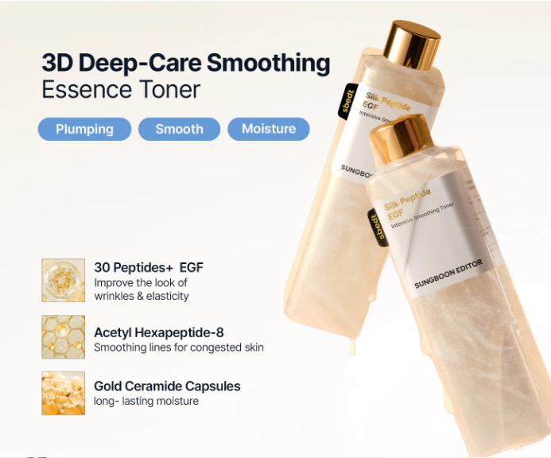

Silk Peptide EGF Toner
성분 설명 · 개인 경험 · 소비자 반응
Beauty / TikTok / Ingredient-led Content
성분을 설명하는 뷰티 콘텐츠,
소비자의 신뢰 기준이 되다
성분에디터 실크 펩타이드 EGF 인텐시브 스무딩 토너를 다룬 TikTok 숏폼 콘텐츠입니다. 유료 광고가 아닌 개인 사용 경험을 바탕으로, 단순히 “좋았다”는 후기를 넘어 어떤 성분이 왜 유효한지, 그리고 실제 피부 경험과 어떻게 연결되는지를 중심으로 전달했습니다.
최근 뷰티 콘텐츠는 감각적인 추천에서 정보 기반 설득으로 이동하고 있습니다. 제품 공식 설명과 인플루언서 마케팅에서도 성분의 기능, 타깃 피부층, 수치적 근거를 함께 제시하는 방식이 중요해지고 있습니다.
Likes5,466
Comments249
Saves2,499
Shares454